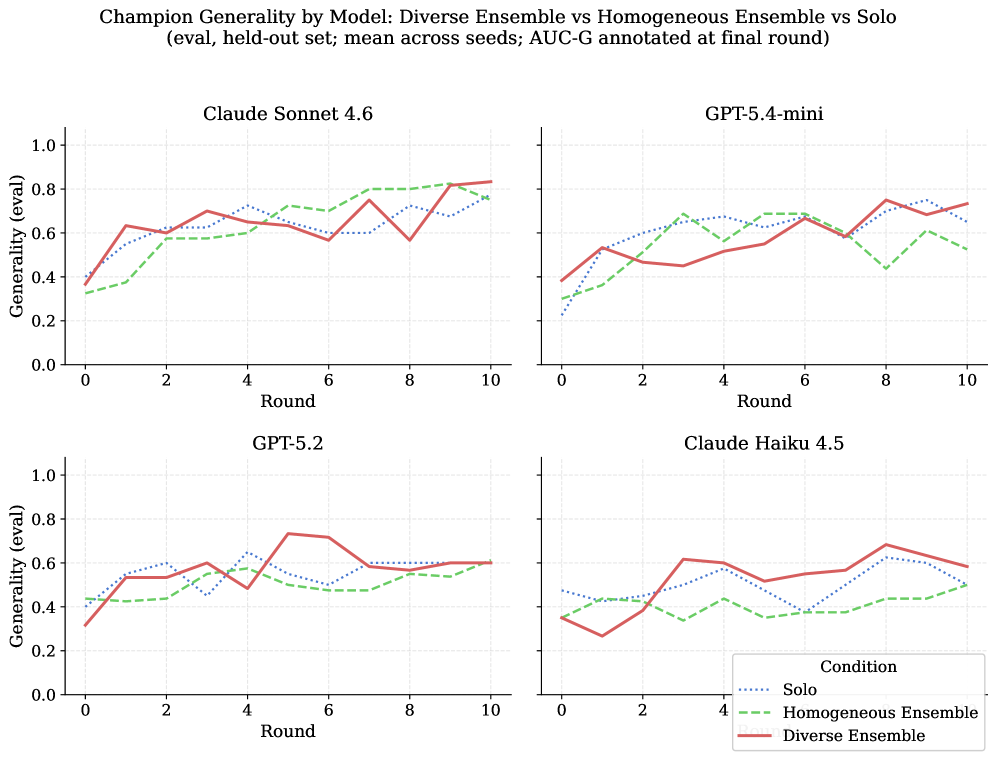
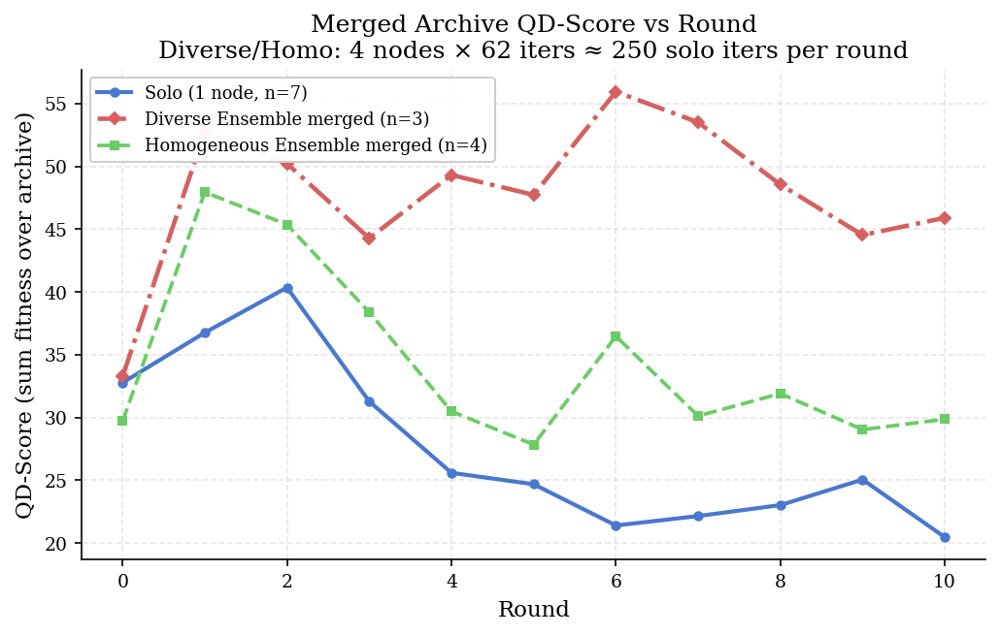

DEI demonstrates that using diverse LLMs as mutation operators in a distributed Quality-Diversity search framework significantly outperforms homogeneous parallel search, providing the first empirical evidence that model diversity is the key driver of gain.
本文提出DEI框架，通过异步冠军共享机制将异构大语言模型（LLM）作为变异算子，在分布式质量-多样性搜索中显著优于同质并行搜索。实验表明，模型多样性而非并行计算量是性能提升的关键驱动因素，QD-Score提升124%，覆盖率提升28%。
Deep Note — dei
Key Takeaways - Heterogeneous LLM ensembles as mutation operators outperform homogeneous parallel search in QD, with 124% higher QD-Score and 28% higher coverage. - Model diversity, not parallelism, is the key driver of gain in distributed LLM-based QD search. - Asynchronous champion sharing avoids synchronization barriers, enabling heterogeneous hardware participation. - Cross-model adversarial pressure from shared champions drives robustness beyond intra-model self-play.
0) Metadata
- Title: DEI: Diversity in Evolutionary Inference for Quality-Diversity Search
- Alias: dei
- Authors: John Donaghy, Shikhar Rastogi
- arXiv ID: 2605.27130
- Published:
- Links:
- Abs: https://arxiv.org/abs/2605.27130
- HTML: https://arxiv.org/html/2605.27130v1
- PDF: https://arxiv.org/pdf/2605.27130
- Tags: quality-diversity, llm-mutation, heterogeneous-ensembles, evolutionary-search, asynchronous-communication
- Domains: ai_safety, system_safety
- Rating: 5/5 (base 1 + quality 2 + observation 2)
1) Why-read
DEI demonstrates that using diverse LLMs as mutation operators in a distributed Quality-Diversity search framework significantly outperforms homogeneous parallel search, providing the first empirical evidence that model diversity is the key driver of gain.
2) CRGP
C — Context
Quality-Diversity (QD) search with MAP-Elites seeks diverse high-performing solutions. The Digital Red Queen (DRQ) framework integrates an LLM as mutation operator and uses round champions for adversarial pressure. Prior parallel LLM search (e.g., FunSearch) replicates a single model across workers, relying on stochastic sampling for diversity.
R — Related work
- FunSearch (Romera-Paredes et al., 2023): parallel LLM calls with a single model, diversity from stochastic sampling.
- Digital Red Queen (Kumar et al., 2026): single-node QD with LLM mutation and adversarial champion pool.
- MAP-Elites (Mouret & Clune, 2015): canonical QD algorithm maintaining an archive of elites.
- Diversity-aware RL (Li et al., 2025; Hu et al., 2025) and multi-agent debate (Liang et al., 2024): promoting generative diversity for exploration.
G — Gap
Existing parallel LLM search treats scaling as computation, not cognition, replicating a single model's inductive biases across workers. The Digital Red Queen framework runs a single model per node, so blind spots in that model's generative distribution become permanent gaps in the archive. No prior work exploits heterogeneous LLM ensembles as mutation operators in distributed QD search.
P — Proposal
DEI assigns heterogeneous LLMs as mutation operators across peer nodes communicating via asynchronous champion sharing. Each node runs a local DRQ optimizer; round champions are shared asynchronously to seed the next round's population, creating cross-model adversarial pressure. This leverages each model's distinct creative prior as a complementary source of behavioral novelty.
---
4) Experiments
Main results
On the Core War domain, a 4-node heterogeneous ensemble (GPT-5.4-mini, Claude Sonnet 4.6, GPT-5.2, Claude Haiku 4.5) achieves QD-Score 45.90 vs. 20.46 (124% higher) and coverage 80.6% vs. 63.0% (28% higher) than a single-node baseline at equal total LLM-call budget. The heterogeneous ensemble also outperforms an equally-budgeted homogeneous ensemble on QD-Score, coverage, and held-out solution generality across all four model families.
Ablation
Holding total compute budget fixed, the heterogeneous ensemble outperforms homogeneous ensembles, isolating diversity as the causal factor (not extra computation).
Limitations
['Evaluation is limited to the Core War domain; generality to other QD problems is unconfirmed.', 'The asynchronous champion sharing protocol may introduce staleness, though results suggest benefits outweigh costs.', 'The study uses specific frontier and open-weight models; results may not transfer to other LLM combinations.']
5) Why it matters
- Provides a principled framework for leveraging model diversity in distributed evolutionary search, directly applicable to your work on multi-agent systems and ensemble methods.
- Demonstrates that asynchronous communication can effectively coordinate heterogeneous LLMs without synchronization overhead, relevant to distributed AI infrastructure.
- Offers a concrete methodology for improving solution generality and coverage in competitive programming and other behavioral spaces.
6) Next steps
- [ ] Implement DEI on a different QD benchmark (e.g., robot morphology or game level generation) to test generality.
- [ ] Explore dynamic model selection or weighting based on per-node performance or archive coverage.
- [ ] Investigate the impact of different asynchronous communication topologies (e.g., gossip vs. all-gather) on convergence.
- [ ] Apply the framework to a multi-agent reinforcement learning setting with heterogeneous policy models.
7) Scoring
5/5 = base 1 + quality 2 + observation 2
DEI：多样性进化推理用于质量-多样性搜索
主要结论 - 异构LLM集成作为变异算子在质量-多样性搜索中优于同质并行搜索，QD-Score提升124%，覆盖率提升28%。 - 模型多样性（而非并行度）是分布式LLM搜索增益的关键驱动因素。 - 异步冠军共享避免了同步屏障，支持异构硬件参与。 - 跨模型对抗压力通过共享冠军增强了鲁棒性，超越了单模型自对弈。
1) 阅读理由
DEI首次实证证明，在分布式质量-多样性搜索中使用异构LLM作为变异算子，模型多样性是性能提升的关键驱动因素。
2) CRGP（背景 / 相关工作 / 差距 / 方案）
上下文：质量-多样性搜索（如MAP-Elites）旨在寻找多样化的高性能解。Digital Red Queen（DRQ）框架将LLM作为变异算子，并使用轮次冠军施加对抗压力。先前的并行LLM搜索（如FunSearch）在多个工作节点上复制单一模型，依赖随机采样获得多样性。相关工作：FunSearch使用单一模型并行调用，多样性来自随机采样；Digital Red Queen是单节点LLM变异与对抗冠军池；MAP-Elites是经典QD算法；多样性感知强化学习和多智能体辩论促进生成多样性。差距：现有并行LLM搜索将扩展视为计算而非认知，复制单一模型的归纳偏差；Digital Red Queen在单节点运行单一模型，该模型生成分布的盲点成为档案中的永久空白；尚无工作利用异构LLM集成作为分布式QD搜索的变异算子。提案：DEI将异构LLM作为变异算子分配给通过异步冠军共享通信的对等节点；每个节点运行本地DRQ优化器；轮次冠军异步共享以播种下一轮种群，产生跨模型对抗压力，利用每个模型独特的创造性先验作为行为新颖性的互补来源。
3) 实验
在Core War领域，4节点异构集成（GPT-5.4-mini, Claude Sonnet 4.6, GPT-5.2, Claude Haiku 4.5）在相等总LLM调用预算下，QD-Score达到45.90 vs 20.46（提升124%），覆盖率80.6% vs 63.0%（提升28%）。异构集成在QD-Score、覆盖率和保留解通用性上均优于同等预算的同质集成。
消融实验
在固定总计算预算下，异构集成优于同质集成，隔离出多样性（而非额外计算）是因果因素。
局限性
['评估仅限于Core War领域，对其他QD问题的通用性尚未确认。', '异步冠军共享协议可能引入陈旧性，但结果表明收益大于成本。', '研究使用了特定前沿和开放权重模型，结果可能不适用于其他LLM组合。']
4) 重要性
- 为利用模型多样性进行分布式进化搜索提供了原则性框架，直接适用于多智能体系统和集成方法研究。
- 展示了异步通信可有效协调异构LLM而无需同步开销，与分布式AI基础设施相关。
- 提供了在竞争性编程及其他行为空间中提高解通用性和覆盖率的具象方法论。
5) 下一步
- [ ] 在不同QD基准（如机器人形态或游戏关卡生成）上实现DEI以测试通用性。
- [ ] 探索基于节点性能或档案覆盖率的动态模型选择或加权。
- [ ] 研究不同异步通信拓扑（如gossip vs all-gather）对收敛的影响。
- [ ] 将框架应用于具有异构策略模型的多智能体强化学习场景。

